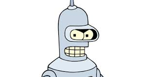
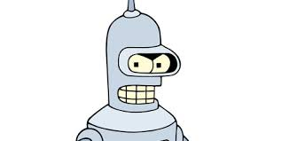

Bender Bending Rodriguez

Bender Bending Rodriguez

Futurama, created by Matt Groening fir aired on march 28, 1999. It told the story of a man named Fry
who was sent over
1000 years in the future through chryofreezing. Fry meets and teams up with the planet express crew and they
embark on many wild adventures.
Fitingly, the show itself had a rather wild realease history. While it originally aired on the Fox
network from 1999-2003, it was canceled by the station.
between then and getting picked up by Comedy Central through 2008-2013 the show released multiple direct to dvd
episodes that were later released as seasons.
Comedy Central would be the last network to host the show. Throughout its run the show recieved praise from both
critics and fans alike,
and it has a dedicated fanbase even today.